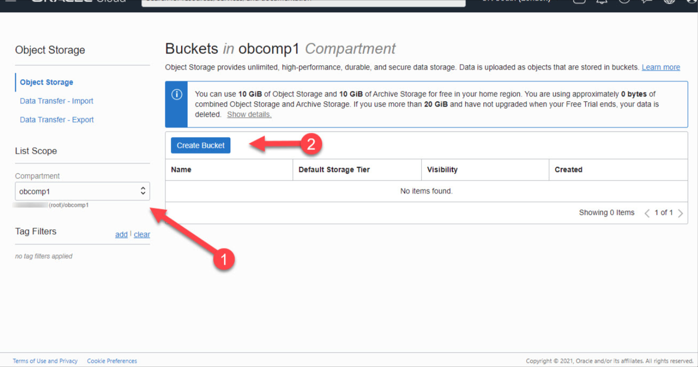
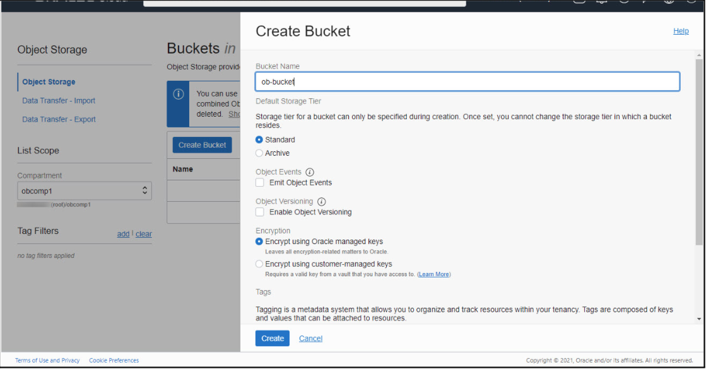
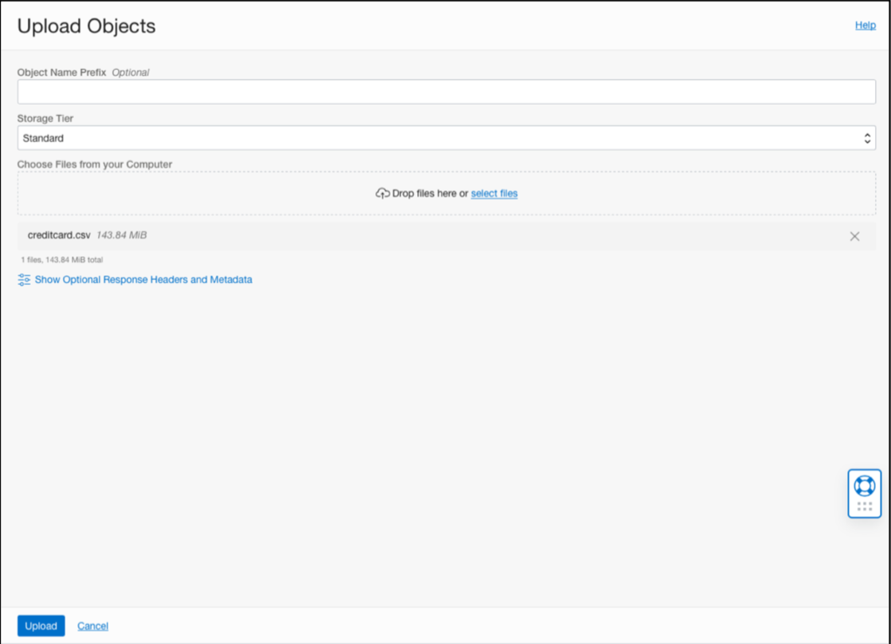
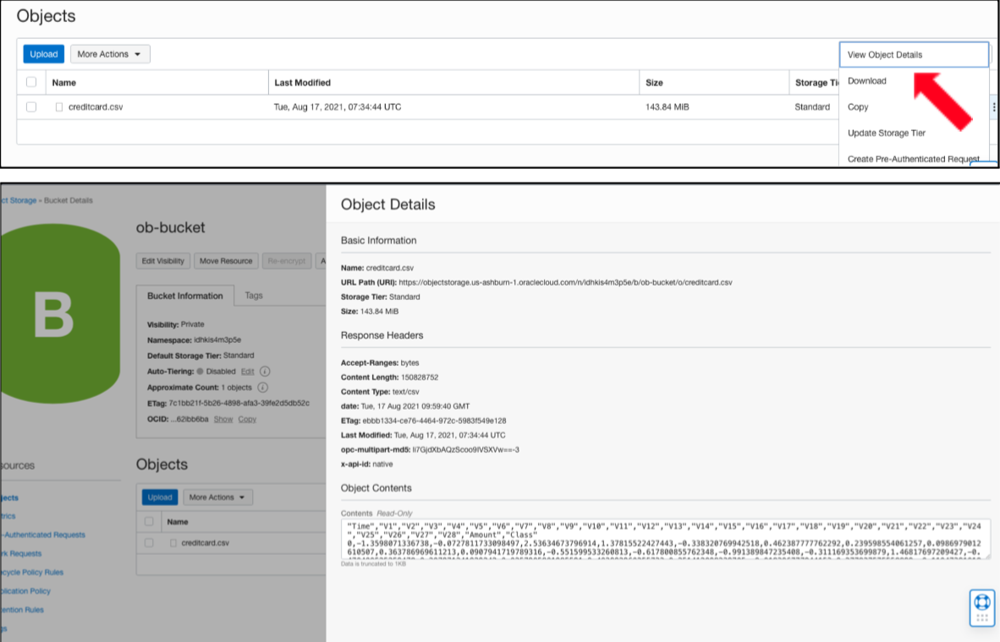

Description
(Data Set and Analysis)
It is important that credit card companies are able to recognize fraudulent credit card transactions so that customers are not charged for items that they did not purchase. We got this dataset from
kaggle.com
The dataset contains transactions made by credit cards in September 2013 by European cardholders.
This dataset presents transactions that occurred in two days, where we have 492 frauds out of 284,807 transactions.
The dataset is highly unbalanced, the positive class (frauds) account for 0.172% of all transactions.
It contains only numerical input variables which are the result of a PCA transformation.
In this use case we will accomplish the following tasks:
- Loading data to Object Storage (shown below)
- Pulling data from object storage using ADS (notebook)
- Preprocessing data (notebook)
- Using AutoML to generate and train ML models (notebook)
- Testing ML model (notebook)
- Saving ML model to model catalog (notebook)
- Deploying ML model as a CLI, REST API on OCI (shown below)
1. Loading Data to Object Storage
The dataset we use in this project is a csv file. Use the following steps to create an object storage bucket under Oracle Cloud Infrastructure (OCI).
a. Log into the Oracle Cloud.
b. Use the top-left menu to select the "Object Storage > Storage > Buckets" option or search up “object storage” and select “buckets.”
c. Select the compartment of interest and click the "Create Bucket" button on the object storage dashboard.

d. Enter the name of the bucket, storage tier and key management, then click the "Create" button.

e. Click on the bucket you just created. You will see bucket information such as the compartment, namespace, ocid etc.
f. Click on the “upload” and put your data from local storage to object storage. You can choose to enter a prefix for convenience.
Press upload in the bottom left corner.

g. You will now be able to see the uploaded data in your bucket. The object detail option found on the right of the listing provides an overview
of the data and a read-only example of the data.

Learn more about Object Storage, here!